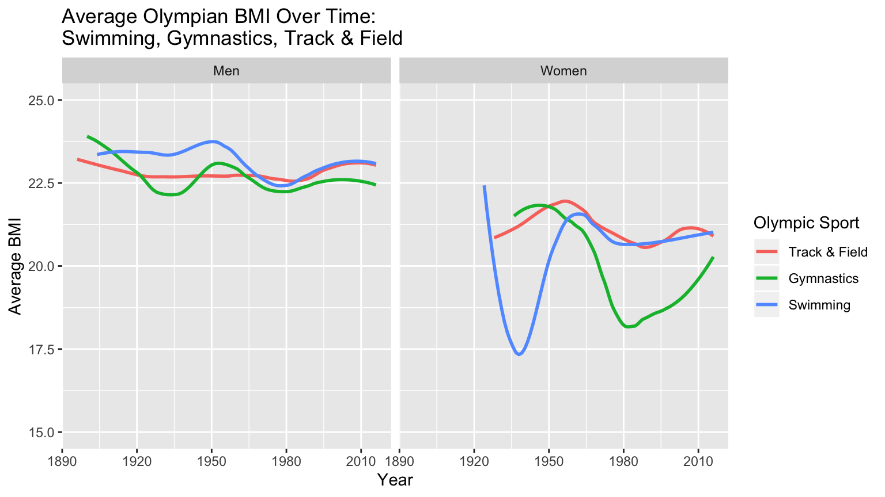

As the world’s foremost sports competition, the Olympic Games brings together the best of the best. Viewers tune in to watch the tiny, yet incredibly toned “Final Five” flip through the air like superheroes, Michael Phelps create mini tsunamis with his impossibly long wingspan, or Usain Bolt’s lean figure zipping past the competition. Perhaps as a child you even had dreams to be amongst them one day, but it seems that unless you grew up to be five foot nothing, joining the Olympic gymnastics team was not in the cards for you. It is obvious that the physical requirements for each sport is drastically different and that within the sport the standard seems extremely specific. And while this is certainly true, that standard has actually changed a lot over time. Our dataset includes the physical stats of athletes across sports from Athens 1896 to Rio 2016.1. We, however, are only looking at three of the most popular sports in the Olympic Games: gymnastics, swimming, and track and field. Thus, through analyzing this data, we hope to gain a better understanding of the physical metrics of elite athletes overtime.
 For male athletes across all three sports, the average BMI is fairly consistent. This is most likely due to the fact that the physical priority for men has always been strength. For women, the physical priority has shifted over time. As female athletes are taken more seriously overtime, the sports have become increasingly competitive. From around 1890-1920, there were no female athletes. Now, women’s gymnastics is even more popular and competitive than men’s. Therefore, body standards are now more specific, but in the beginning the standards and BMI ranged dramatically.
Griffin, Randi. “120 years of Olympic history: athletes and results”. Kaggle, 2017, https://www.kaggle.com/heesoo37/120-years-of-olympic-history-athletes-and-results. Accessed 15 Dec. 2019↩